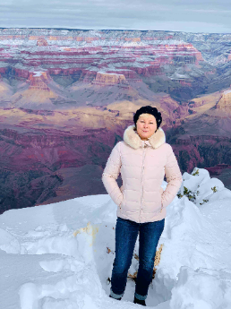

Elena Barsov's SCC IT162 Portal Page
Welcome

Hi there! My name is Elena Barsov. And I'm not looking for easy ways. I seek new challenge, so, I'm here to acquire a new profession. Last year, I was studying application development. But I like web design more. I hope I will be able to master this profession.
Since I am just beginning my ascent to this peak, it can be compared to the dawn in my life. Now I have a second chance to gain a new profession.
I love my family and traveling. It is my passion!I love small and cozy Europe and travel a lot there. I also like the nature and wide expanses of America. All States are different and do not resemble one another.